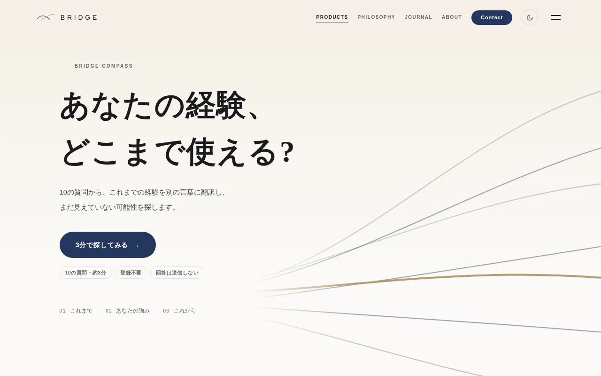
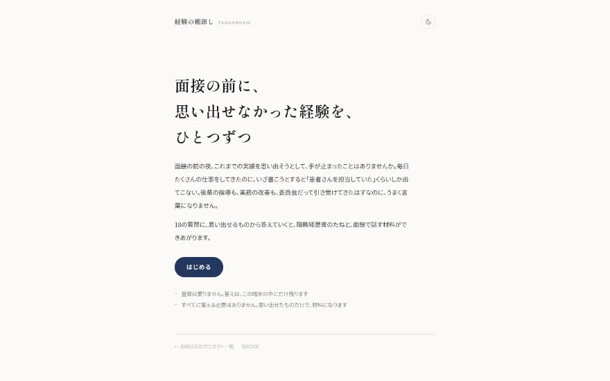

看護師・リハビリ職・医療事務の方へ。いつもの仕事が病院の外でどんな言葉になるかを見つけて、ゲームや道具で試せます。
臨床だけをしていた頃、事業会社で働くとは思っていませんでした。
外に出てみると、病院で当たり前にやっていた調整や記録が、別の場所では別の名前で呼ばれていました。
道は、病院の外にも続いています。それが見えるものを、ひとつずつ作っています。
理学療法士の私(橋本渉)が、ひとりで運営しています。
BRIDGE Compass( 公開)
いつもの仕事を、外の言葉で言うと
「退院支援」はプロジェクト推進・合意形成
言いかえは BRIDGE Compass の表から選んでいます。質問に答えると、職種と答えに沿った言いかえと、いまの経験から見える3つの方向が「橋」として出ます。

ほかにも、いろいろ試しています
作ったものを、直しながら置いています。ここに並べたものは無料で、登録もいりません。入力はこの端末の中にだけ残ります。
小さく試しているもの

ぜんぶで29個あります。一覧を見る